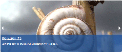
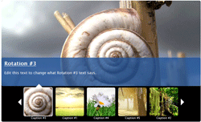
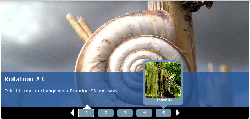

Introduction:
Need a easy to use and customise Rotation/Slide Show/A spot. This rotation module is just what you are looking for.
The administration menu setting page allows you to modify your Rotation/Slide Show with its easy to edit form that controls the global settings across your website of the Rotation/Slide Shows so you have consistency. You can completely customize the entire slide show and make it your own. You can view the different types of slides shows you can easily create here and view all settings replicate your slide show to the example.
Check out the module creators website www.JoeMRoberts.com/Rotation for more information about the Rotation/Slide Show/A spot.
Please Note: You can only use one Rotation Block on a page at a time.
Back To Top
Getting Started with your first Rotation:
- Watch Video Instructions on how to get started
- Instal Weight Module
- Instal Module
- Go to the Rotation Module Configuration page (Configuration > Content Authoring > Rotation Module)
- Configure it they way you want it to show up across all Rotations.
- Be sure to read all the notes under each input to help you figure out how to best use the rotation.
- Hit Save
- Edit Rotation Item Nodes to be what content you want
- Go to the Blocks Configuration Page (Block Structure > Blocks) and drag the block "Rotation Location # (Rotation Main)" (in this case since is our first one it is Rotation Location 1 (Rotation Main)) to the Content Area above the "Main Page Content" so the rotation appears on top of the content.
- Hit Save Blocks
- Configure the block "Rotation Location # (Rotation Main)" in this case since is our first one it is Rotation Location 1 (Rotation Main)
- Select the Location you want from the drop down. Since this is the first Rotation we will use the default location "Home Page" you can use this for any page it does not have to be the Home Page it is just a place holder name and you can even change the name in the taxonomy section of the website.
- Do not see what you are looking for or want to change the default "Home Page" to a different name. Add a new or edit the vocabulary term Rotation Location by going to Structure > Taxonomy > Rotation Locations
- Change the "Visibility Settings" and make sure that "Pages" is set to "Only The Listed Pages" and then put in the page you want this to show up on. Example use <front> will only display this block on the front page. If you do not do this it will automatically show up on every page. In this example we will use <front> for the home page.
- Hit Save
- Select the block "Rotation Location 1 (Rotation Main)" again and configure it
- Now re-order the Rotations to the order that you want by sliding them up and down. The weights will automatically update for you.
- Hit Save
- Your rotations should be displaying on the page you specified in the "Visibility Settings" inside the block. In this case it was <front>.
- Do not forget to edit the permissions of the Rotation Block so that anonymous users can see the rotation.
- Please Note: You can only use one Rotation Block on a page at a time.
Back To Top
Adding an Additional Rotations:
- Watch Video Adding an Additional Rotations
- Go to the Rotation Module Configuration page (Configuration > Content Authoring > Rotation Module)
- Update the "Total Number of Rotations" to the desired number of rotations in the case we want to add one more so we will change the number to "2"
- Hit Save
- Add a new vocabulary term to Rotation Locations by going to Structure > Taxonomy > Rotation Locations
- Add Term
- Name it what you want (Usually a good practice to name it the same as the title) we will call it "Training"
- Description is optional
- Hit save
- Add new content that is of the content type of Rotation Item
- Add in the required fields and hit save.
- Under Location Select the newly created Taxonomy Term "Training"
- Continue adding until all nodes you want for the new rotation have been created
- Hit Save
- Go to the Blocks Page by going to Structure > Blocks and drag the block "Rotation Location # (Rotation Main)" (in this case it would be Rotation Location 2 (Rotation Main)) to the Content Area above the "Main Page Content" so the rotation appears on top of the content.
- Hit Save Blocks
- Configure the block "Rotation Location # (Rotation Main)" in this case it would be Rotation Location 2 (Rotation Main)
- Select the Location you want from the drop down. We will be selecting "Training" since we just created that taxonomy term.
- Do not see what you are looking for or want to change the default "Home Page" to a different name. Add a new or edit the vocabulary term Rotation Location by going to Structure > Taxonomy > Rotation Locations
- Change the "Visibility settings" and make sure that "Pages" is set to "Only The Listed Pages" and then put in the page you want this to show up on. In this case we want it to only display on the Training page which is "training".
- Hit Save
- Select the block "Rotation Location 2 (Rotation Main)" again and configure it
- Now re-order the Rotations to the order that you want. The weights will automatically update for you.
- Hit Save
- Your rotations should be displaying on the page you specified in the "Visibility Settings" inside the block. In this case it was "/training".
- Please Note: You can only use one Rotation Block on a page at a time.
Back To Top
Configuring the Rotation Tips and Tricks:
- Total Number of Rotations: Enter the Number of Rotation you would like to display on this website. This will create a block for each of the sites so you can place it on the pages that you want to.
- Entire Rotation Information
- Large Image Width: Choose a Width for your Large Image. Please Note: Make sure the images you are posting are set to this width. If they are larger they will be cropped.
- Large Image Height: Choose a Height for your Large Image. Please Note: Make sure the images your are posting are set to this height. If they are larger they will be cropped.
- Rotation Transition Time: In milliseconds 1,000 = 1 second.
- Entire Background Color: Drag the color chart below to pick a color. The outside ring selects the color and the inside square changes the lightness or darkness of that color. It is a good idea to match your background color.
- Entire Rotation Rounded Corners: Rounds all the corners to help it not look so boxy-looking.
- Overlay Information
- Selected Overlay Positions: Choose a position for the overlay area to display. You can choose from Bottom, Top, Left or Right.
- Overlay Width: Please Note: Remember if you choose top or bottom this field will be ignored. Choose a Width for the overlay area of 200px wide use "200". Leave off the "px".
- Overlay Height: Please Note: Remember if you choose right or left this field will be ignored. Choose a Height for the overlay area of 100px tall use "100". Leave off the "px".
- Overlay Text Color: Please Note: The font-family and font-size will be inherited from your style sheet. Feel free to edit the class by changing (Rotation Links = .rotationLinks class) and/or (Rotation Header = .rotationHeader class).
- Overlay Background Color: Drag the color chart below to pick a color. The outside ring selects the color and the inside square changes the lightness or darkness of that color.
- Overlay Background Opacity: Choose a value between 0 (Completely Transparent) and 1 (Solid Color). Example: 0.80 is 80% transparent. If you do not want an overlay at all just set this value to 0.
- Filmstrip Information
- Filmstrip Position: You can change where the filmstrip shows up. Select bottom, top or No Film Strip. No Film Strip will remove the filmstrip completely.
- Filmstrip Style: There are two styles you can setup for your filmstrip. Thumbnails = More traditional style with a thumbnail in the filmstrip. Numbers with Pop-up Thumbnails = Adds smaller numbers into the filmstrip area and allows you to use the thumbnails as pop-ups to preview what is available for that number. It also allows you to use the captions as text to display what is available underneath the thumbnail.
- Edit Thumbnail Information
- Thumbnail Width: Choose a Width for your thumbnail images. If Filmstrip Style is set to "Numbers with Pop-up Thumbnails" then this value also determines the width of the pop-up. Please Note: Make sure the images you are posting are set to this width. If they are larger they will be cropped.
- Thumbnail Height: Choose a Height for your thumbnail images. If Filmstrip Style is set to "Numbers with Pop-up Thumbnails" then this value is ignored. Please Note: Make sure the images you are posting are set to this height. If they are larger they will be cropped.
- Numbers with Pop-up Thumbnails Background Color Only: If Filmstrip Style is set to "Thumbnails" then this value is ignored. This controls the color of the background of the numbers and the pop-up. Drag the color chart below to pick a color. The outside ring selects the color and the inside square changes the lightness or darkness of that color.
- Edit Caption Information
- Show Captions: Selecting "yes" will allow you to see captions under each thumbnail in the filmstrip.
- Captions Height: This is the height of the caption area. 20 = 20px in height. If you have a longer caption you might want to make this a larger number. You can adjust the line-height be changing the ".caption" class.
- Caption Text Color: Drag the color chart below to pick a color. The outside ring selects the color and the inside square changes the lightness or darkness of that color.
- Filmstrip Selected Image Border Color: Drag the color chart below to pick a color. The outside ring selects the color and the inside square changes the lightness or darkness of that color.
- Filmstrip Arrows and Pointer Color: Drag the color chart below to pick a color. The outside ring selects the color and the inside square changes the lightness or darkness of that color.
Back To Top
Different Style Rotation and Settings:
- Watch Video Different Style Rotation and Settings
- Without Thumbnails (View Larger image): This setting has no thumbnails and it has arrows that overly the main large image which allow you to advance your rotation.
- Settings:
- Set the "Filmstrip Position" to "No Film Strip."
- Optional: Without Overlay Background Color set "Overlay Background Opacity" to 0.
- Optional: Add Rounded corners for a different look select "yes" for "Entire Rotation Rounded Corners"
- Standard with Thumbnails (View Larger image): Basic Large Image with Thumbnails below it.
- Settings:
- Set the "Filmstrip Position" to "top" or "bottom" depending on where you want the thumbnails to show up
- Set the "Filmstrip Style" to "Thumbnails"
- Optional: Without Overlay Background Color set "Overlay Background Opacity" to 0.
- Optional: Add Rounded corners for a different look select "yes" for "Entire Rotation Rounded Corners"
- Numbers with Pop-up Thumbnails (View Larger image): Large image with smaller numbers and a pop-up preview of the thumbnail and captions if used.
- Settings:
- Set the "Filmstrip Position" to "top" or "bottom" depending where you want the numbers and pop-up thumbnails to show up.
- Set the "Filmstrip Style" to "Thumbnails"
- Optional: Without Overlay Background Color set "Overlay Background Opacity" to 0.
- Optional: Add Rounded corners for a different look select "yes" for "Entire Rotation Rounded Corners"
Back To Top
Can I have a single Rotation Item show up in more than one place:
Yes, it is easy. All you have to do is open the node that you want to share across multiple Locations and scroll down to the Locations section and check any additional locations you want it to show up in. There is a known issue that the is only one weight. So you might have to work the weights between the multiple to get it to show up where you want in each rotation. But aside from that it is simple.
Back To Top
Known Issues:
- Numbers with Pop-up Thumbnails can not have to many listing in it or it breaks and hides the arrows.
- One Rotation Item (Node) in multiple rotations blocks on a site needs to be played with because there is only one weight field per item. So to get them to show up in the correct place in both rotations you need to play with the weight number.
- Please Note: You can only use one Rotation Block on a page at a time. If you add multiple to one page it will break. You can have multiple rotations on your website just not on the same page.
- Multiple JS scripts with the same name does cause bugs. You might need to remove them from your theme layer so they do not conflict with this module.
Back To Top